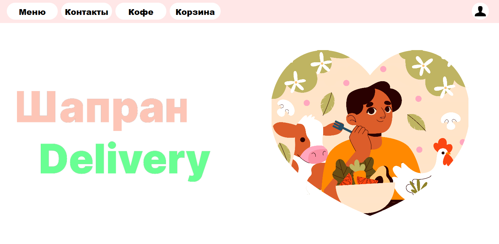
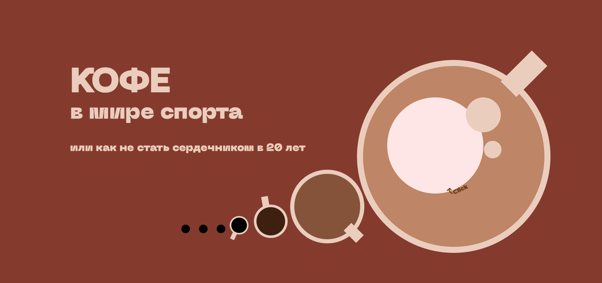
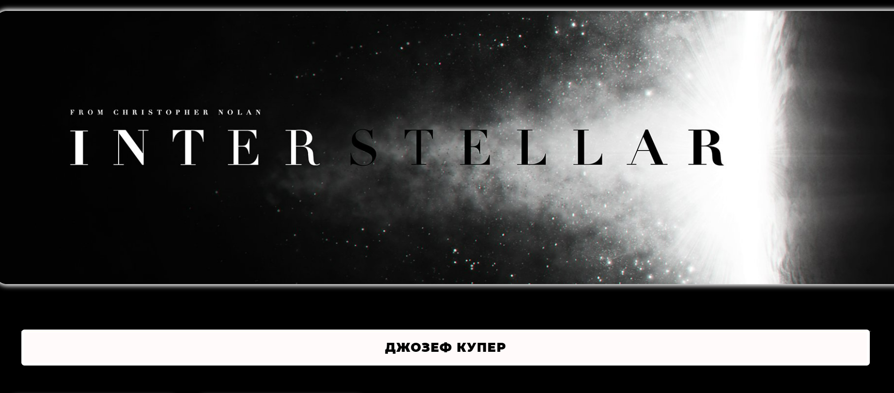

Family Tree
Сервис по созданию генеологических деревьев
Сайт Family Tree представляет из себя сервис по созданию собственного генеалогического древа, на сайте предоставлены все необходимые возможности для погружения в данную сферу.
Future Tech - последние новости в технилогиях
Сайт Future Tech обозревает последние новости и события происходящие в мире науки и технологии, повествует о возможностях в данной сфере и подробно знакомит с миром науки и техники.
Future Tech предоставляет возможности выбора подкастов, новостных лент, поиска научных и научно-популярных ресурсов.
На сайте представлены все виды навыков (HTML, CSS, JS, React, MySQL). Именно поэтому он является лучшим представлением моих профессиональных возможностей.

Сервис по созданию генеологических деревьев
Сайт Family Tree представляет из себя сервис по созданию собственного генеалогического древа, на сайте предоставлены все необходимые возможности для погружения в данную сферу.

>Сервис доставки вкусной и полезной еды
Сайт представляет из себя лицо сервиса. На сайте продемонстрироаны возможности доставки, вся необходимая информация и ссылки для использования мобильного приложения.

>Сайт рассказывающий о взаимодействии кофе и спорта
Сайт представляет из себя простой лендинг. На нём можно найти информацию о воздействии кофе на организм спортсменов, а также о его пользе и вреде.

>Описание и сюжет фильма Interstellar
Сайт представляет из себя лендинг призывающий к просмотру фильма Interstellar. На сайте имеется краткое описание сюжета и знакомство с актёрским составом фильма.